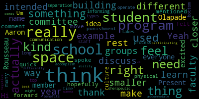
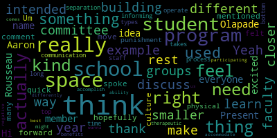

total time: 18.23 minutes
total words: 2788

total time: 2.57 minutes
total words: 513

[Ruseau]: to make it today because of the prior commitment to work. So I am going to get us going. So wait, it's 301. All right, good. And I'm trying to figure out, my kids aren't home. So hopefully that will remain the case. Thank you, everyone. This is the May 15, 2024 subcommittee of the Fever Health and special education subcommittee meeting for three o'clock. This meeting is being held via Zoom only. It will be recorded and is being broadcast onto Zoom as we speak. And I do hear that I'm not alone anymore. The YouTube link is in the meeting notice. It is https://mps02155-org.zoom.us slash u slash A-D-D-N-A-W-M capital L-G capital Y. I think they thought that was better than the old way. I don't know if I agree. Anyways, if you have any questions or comments you want to send during the meeting rather than speaking up, you can send those to me directly at PRUSEAU at medford.k12.ma.us. Please include your first and last name, your Medford Street address, your question or comment. The agenda for today, as approved by the committee on April 29th, 2024, item two, Item 2024-22, be it resolved that the Special Education Behavioral Health Subcommittee will meet to discuss whether the Curtis-Tufts School should be co-located with the Medford High School campus to improve educational outcomes for Curtis-Tufts students. Say that three times fast. Be it further resolved that the subcommittee will invite current and former students and staff to provide comments, but it also resolved that the committee will report back to the school committee on whether the credits test program should be co-located no later than June 3rd, 2024, because this information is critical to the progress of the Medford Comprehensive High School Building Committee as it completes the district's educational profile. That's a mouthful. I'm going to take the roll. Member Intapa is absent. Member Olopade?
[Olapade]: Present.
[Ruseau]: And member Rousseau is present, two present. We have a quorum. We have lots of people popping on. This is lovely. We usually have zero people on subcommittees other than those of us that have to be here. So that's nice. So, you know, I was trying to figure out how to run this meeting. And I will admit it's an unusual subcommittee meeting because there's not like some policy we're updating or, but I thought maybe we could go around and introduce ourselves, those of us that are here so that you can say like why you're here, just for my notes, but also so we can have a sense of how to move the meeting along. And I'll start at the top for me, which is of course different for everyone and that'd be Suzanne.
[Galusi]: Hi, good afternoon. Suzanne Galussi, Assistant Superintendent for Curriculum and Instruction. I'm here just to be a participant in the decision-making process and very curious about the rollout of the Curtis-Tufts and possible participation with Medford High School.
[Ruseau]: Thank you. Member Olopade, I just want to say who you are in case everybody doesn't already know.
[Olapade]: Yeah. Hi, everyone. My name is Aaron Olopade. I'm on the school committee with member Rousseau. I'm just excited to be here to kind of discuss this idea and hopefully move things forward. So thank you. Thank you.
[Ruseau]: Dr. Edward Vincent.
[Edouard-Vincent]: Yes, good afternoon, everyone. My name is Maurice Edward Vincent, superintendent of schools, and I'm happy to be here tonight to be part of this conversation as well and listen to the proposals regarding the Curtis Tufts School. Thank you. Thank you. Ms. Bowen?
[Bowen]: Good afternoon, everyone. I'm Joan Bowen. I'm director of student services here at Medford Public Schools. I'm here also to provide some historical background as well as informational background about the Curtis Tufts, as well as the staff here. We've been in discussions about where we see the Curtis Tufts in the future. So I think this is a very important meeting to get feedback from the stakeholders and then make our decisions going forward. Thank you.
[Ruseau]: Thank you, Dr. Cushing.
[Cushing]: Hello, my name is Peter Cushing, Assistant Superintendent of Schools for Enrichment, Innovation, and Operations. And I'm here as someone who has worked closely in the past with the Curtis-Tufts, and I'm very excited as we move through the MSBA process to see about this co-location opportunity for the benefit of students.
[Ruseau]: Thank you. There's a little fly running around, so I'm not losing it. I just like can't get it. Next up, I have Jess Ferley, Healy, excuse me. And if you don't wanna introduce yourself or anything, that's perfectly fine too. And actually.
[Ferley]: Hi, sorry. I'm just here to see the update of what we're gonna be doing with the Curtis Tufts and just to observe.
[Ruseau]: Thank you, Jess. And I have Lori, but I believe there's more than one person there, so.
[Hodgdon]: Hello, I'm Lori Hodgdon. I'm the current school director here at Curtis Tufts. This is my second year, and I'm here with two colleagues who are teachers at the Curtis Tufts.
[Lillard]: I'm Kate Lillard. We're all special ed teachers, but I'm teaching math at the Curtis Tufts. This is my first year here, but I was at the Andrews Middle School for nine years before that. And tell Nev I said hi.
[Ruseau]: I will. She's at Travers Ed right now.
[Lillard]: Oh, good.
[Morris]: Hi, I'm Tom Morris. I started at Curtis Tufts this year. I'm a special educator, and my focus right now is on science.
[Ruseau]: Wonderful. It's good to know is in the room, little easier when we're actually in person, but then we all can make it so. So, at the school committee meeting where we had this motion made. really wasn't the point of the topic or the conversation going on, but there was, I forget the person's name, who is not actually able to make it here, is the director of the program over at Somerville. And I believe in Somerville, they used to have a program separated very much like we have. And then when they rebuilt Somerville High, are they actually done? It's been the longest project in history, it seems. But when they rebuilt Somerville High, they added I don't know if it's a wing we haven't actually taken a tour yet for their alternative high school students and apparently it has been beyond wonderful he described. dramatic increases in participation of those students in extracurriculars, you know, sporting and club presidents and things that are very difficult when you're not located with the rest of the student body. And obviously we'll want to take a peek at that if we do make this recommendation so we can have that information for our MSBA project for a re-imagined high school. But that was sort of, It was nice that he came because it was very surprising. I really had no strong sense of this issue, other than the facilities of the Curtis Tufts are challenging. I wrote Four things, three things down, opportunities for students, which I just spoke to, facilities, which, you know, facilities at Curtis Tufts versus Medford High is one thing, but the facilities of the Curtis Tufts at a perhaps glossy, beautiful, new Medford High would be a different juxtaposition. This little fly is gonna make me crazy. So anyways, And, you know, we talked, I had talked, I can't remember with who about, you know, if we did bring the school over. bring them together, maybe we can have a separate entrance, separate start and end times, some kind of partitioning if that actually is appropriate and okay and works. But there were ways to retain, what I have heard is that the students in the Curtis Tufts and at other alternative high schools, the key for them is they're not with the rest of the student body or maybe even some of the staff, that they are in fact not there, that's the point. I think I'm done talking and I would like to hear what anybody else. Oh, Ms. Bowman, would you like to give us a little history lesson?
[Bowen]: Sure. So the Curtis Tufts was created back in 1982. So it's been longstanding part of Medford Public Schools. It is what we call our public day therapeutic program. So it's a small school setting for students who are on individualized education plans. A lot of the students have social emotional disabilities and the big setting of the high school is too much for them. We offer smaller classes, smaller teacher to student ratio. There is individual counseling, group counseling, The, the, it's a more of a community within the Curtis Tufts, the staff and students eat lunch together. There's a lot, there's a community time breaks for them to to build relationships and have those staff members that they trust. while they are working on their academics to receive their high school diploma. So every student from Curtis Tufts earns the same amount of credits that Medford High School or Medford Vocational Technical High School student does. And we also have opportunities in which the students choose to participate in extracurricular activities here at Medford High School. They can also be involved in sports. And we also have students who, when they're ready, they may want to transition to Medford High School for an academic class. and we provide those opportunities for them. So it's very individualized for the students' needs. We have four academic teachers. We have two counselors. One is a school adjustment counselor, and the other is a school counselor slash guidance counselor, as well as the principal, Dr. Laurie Hodgdon. It's been a great program that has provided a lot of services for students over the years. And I'm interested in hearing what the staff have to say about the possibility of being at the high school because I do think it will provide our students, even more opportunities, like the gentleman from full circle or full scale had had. communicated with us, there are pros and cons, but the pros definitely outweigh the cons. So that's what I'm interested in hearing, but I'm also, I'd like to see the Curtis Tufts be able to experience a newer school building and facilities and just, you know, let the students know that they are important to us and we value them as much as we do any other student in Medford.
[Ruseau]: Thank you, that was helpful. I was not on the school committee in 1982. I was 11, but so that's wonderful history. I would just ask, do you have any data on the size of the student population served during that time? And I realized it varies dramatically even within a single year, but did it used to be much bigger or was it just two or three students when it started?
[Bowen]: Nope, the Curtis Tufts previously had an enrollment up to 40 students. So there were times that it was fully enrolled. And we also had opportunities to have students from other districts tuitioned into the Curtis Tufts because a lot, Everett, Malden, Revere, Chelsea did not have their own public day programs at that time. And they also needed the type of services that the Curtis Tufts offers. So we were able to tuition in students and we have done that in the past. Currently our enrollment varies from 15 to 20 students, but there is that opportunity to increase enrollment as well.
[Ruseau]: Thank you very much. That's great. I mean, mostly I know about the Curtis Tufts when we used to go for the delightful Thanksgiving dinners, which I, no pressure, but I would love it if those started again. It's really very nice. So I'd like to hear from the staff, I think is really an important folks too, who are there every day.
[Edouard-Vincent]: Sure.
[Morris]: Hi, I'm Tom. I guess I can go first and break the ice. Be the brave one. I'm new, right? So I'm new to the district, and I'm new to the team here. 16 years in education, working with at-risk youth, always as a special educator. My experience in both settings has been different, and there are benefits, in my personal opinion, to both. And in a program such as the one that we work in with Dr. Lori, we have an unbelievable ability to make immediate real time shifts and the way that we address student need and the locations that we're addressing those needs and providing opportunities for community based learning as well as space and separation. when people need that time to process. So what we do here, we use the full space. So the benefit of having this space is that we have the room to do what we need to do, not only for safety, but also for a student's growth trajectory. So if a student needs to process for five minutes or think for five minutes before processing, we have the time and the space to be able to do that. With that said, because we're at a separate location, one of the downsides to having the separate location and the cost of this space is that sometimes students can come in and say they feel like they've been... I'll be honest, I'm just going to use student language when they're angry. I feel like I've been thrown away. And so that can be a challenge, right? That is not the truth. That is the experience in the words that they sometimes, not in every case, used to describe that situation. That's not specific to here. That's a 16-year trajectory seeing these things happen. Um, when the programs are housed in the high school, I was, I founded a program in the Webster public school system which is in southern Worcester County, heavily DCF, DYS involved, a lot of generational poverty, multicultural, very diverse, with a lot of intense needs. which, by the way, congratulations to the superintendent. They were also in Enough Abuse Campaign District, and that work was amazing, so I just want to give a shout out there. But with that said, what I saw in the building, when the program was housed in the building, benefits were that when a student had earned opportunities and shown good self-regulation, engagement, community skills, they did have opportunities to return for a period of day easier than it would have otherwise been to get a van to transport the kid back and forth, the student back and forth. So that was one advantage. A disadvantage was that a couple of times students showed up to the door looking for drama with students who were trying to separate themselves. They have said, I want to go to this alternative mindset and not stay in the mainstream mindset that I had of engaging in drama. And sometimes when in the same building, the drama found the student who had already made the decision to try to walk away. And so when that drama follows them, it was sometimes hard for them to continue to maintain that separation between the decisions they'd made yesterday and the ones they want to make today. So I believe that there was a benefit, like I said, with the continuity between students in the broader community. That said, the challenge was it wasn't always easy to separate from what that student was really truly trying to separate from, so they could move forward and re-engage when they were ready. It didn't allow the full buffer that a separate location had otherwise offered in other years of my experience. That's pretty much all I have to really say right now. I don't want to get wordy. I just wanted to share that I worked in both, so I just wanted to give you my sense of some strengths and and challenges that we face in both. Are there any questions for me? Please.
[Ruseau]: I have questions. Member Olopade, anybody else have questions before I go? The buffer wasn't good enough. Really, that's a key element of this conversation, frankly. Can you describe what it was like there that I mean, was it just everybody came through the same main entrance of the schools or how was it laid out? And I'm not asking for an architectural drawing or anything, but help me understand.
[Morris]: This is a great question and I'm very glad you asked it. We, and I can also repeat that this situation existed not just in Webster, but also in Haverhill because I founded that program as well. And in both cases, I demanded access to an alternative entrance Because I wanted students to be able to arrive five minutes after the buses or 10 minutes before the buses and not have to engage if they weren't feeling ready. Because that student should have the right to say I'm not ready to engage in big community right now. and I need to work on my own self because that student is able to then advocate because that opportunity exists. And without it, they couldn't ask for that. So that buffer was important when it's in the building to be able to have a separate entrance, to be able to have a student who needs to leave and be able to leave through a separate entrance as well. Sometimes they might leave with some colorful language and it might be a bit poetic. There might be some stomping and a door slamming, and there's no need for there to be secondary trauma for others. So that allowed us to give the student the space they needed to get to have their needs met and a safe way. So that separate entrance was key. The second thing we did was we were super intentional about where we chose to put the programs. And we always chose based on access to the nurse. Because in a building, students are going to need to access the nurse. So we tried to make the nursing, our wing, connected based on where the nurse was. So the nurse's office in Webster existed here, and then the wing started beyond that. So it worked perfectly. In Haverhill, we had to make it and a separate wing that was near the nurse's office. So that was what we were doing there. So that was a super intentional thing we had to be mindful of based on entrances. A second reason for this is a lot of the students who end up in these therapeutic day school programs come with significant trauma histories as well as significant current anxiety and depression. And when a student is not feeling like they are good enough for themselves, they don't want a large audience. And we call a student with that profile an internalizer. So that student who's internalizing walks through the front door and sees two kids arguing, just might happen in any school in the country, and they immediately shut down for the rest of the day because their comfortable people weren't around, their safe zone wasn't immediately available, they had to navigate a hallway to get to it, and they had panic. So they had to live with a panic attack without their supports nearby. And so that that's a challenge. So when we had that separate entrance, we had kids that were school. I'm going to use the word school avoidant because I don't choose to love the word school refuser. So we had school avoidant kids who that was the change for them. That I can come to school again because I can go through a separate entrance so if it's in the building that was my take that that separate entrance was key Haverhill was more complicated. We actually had to get special permission for security to allow parents to drop off at around the back of the building where other parents are not allowed to drive during drop off. We had to have security aware of what their cars were what they look like so they wouldn't stop them and let them through. Then when the student went through, we had to have a system whereby they could be let in and have it be marked at the office so we would always stop at the principal clerk's office and they would timestamp the arrival so that it was official and on the books for safety and liability. And then if the student left through that separate entrance, they would have to leave through that same assistant principal's office. So we found a makeshift way to have a kind of like a main office for this sub-separate program because of where we made it proximate to. So we made it proximate to another administrative office that could, that clerk could do the intake, outtake paperwork and make it official for attendance and liability and safety. It also helped with fire drills. and Alice and any kind of evacuation drills, because we were so close to our exits and our kids practiced them, that we had points that were not in the main lineup for a fire drill. We were like, we went far beyond that. We went like another 200 yards past where everyone else lined up. So our kids didn't have to be in the chaos while they were trying to recover from the loud noises. So that's pretty much the long version of it. But you asked a good question. So I hope that was insightful.
[Ruseau]: It was, I mean, honestly, like the number of things to consider, like the fire drill location for these students, honestly, it would never have occurred to me, not that I'm asked to, but clearly there are a million and one little things that have to be considered if this decision is to co-locate. It's not just a matter of a set of classrooms.
[Morris]: We had a student who wouldn't leave the building. one day because they didn't want to go in the mass audience. And so then we immediately changed that. So we learn as we go. And I anticipate that everyone who, if this happens, that it's cohabitating, I think everyone's going to have to keep an open, really open, flexible mind for that first year while the kinks get worked out, because there's going to be stuff that happens that can never be predicted. And so what we should do, I think, is predict that things that are unexpected are going to happen, and we need to just be prepared to not take it personal and just have honest, open communication and hard conversations that not everyone's going to agree on, but we're going to come to consensus. So those are some of the challenges that we faced as teams in those two buildings where we had it in-house.
[Ruseau]: Thank you. That was a remarkably helpful set of information. I think that, you know, when we're reimagining Medford High School, whether we rebuild or renovate, obviously nobody's surprised to know that I want to rebuild the new building, but, you know, like a separate entrance, that was like my thing. There are really a long list, by the way, if we make this decision, I think it might be helpful for current Curtis Tufts staff. to just open a Google doc and start writing all the things you can think of, which may be important inputs to a design of a structure that, you know, those of us that are not there wouldn't consider because while we're not at the phase now where we're not doing the feasibility study right now and what the building might look like or where it would be or any of that stuff, that's all gonna come and that's gonna happen it's gonna just, once we get through this first phase of eligibility, which is proving that we can do this work, it feels like that's gonna happen just like all at once. And so any headstart you can get on a list of things that you think are important considerations in the design of a space, if that is inside or co-located. We don't know the rules. We don't know if the state would physically a separate building right on the same property. I don't think any of us know the answer to what they think is acceptable. I think about things like food services, you brought up nursing. There are other services for which having that, whether it's a separate wing or whether there's a little bridge, we talked a lot about bridges in one of our meetings. Everybody wants a bridge to their own program now. which why not, right? But yeah, if you can, I'm guessing that like most of us, you will think of something you wish you had said later. So write those things down. You can send them to me or open a Google doc for your staff. Cause I think that'd be great.
[Lillard]: Sorry, go ahead.
[Ruseau]: Go ahead.
[Lillard]: No, I'm done. So I actually did put together a Google Doc because I like spreadsheets. So aside from the design of it, I have a list of benefits that we would love to see happen that would be available if we're co-locating, as well as concerns. And I also have some, I was talking to a few students today who have been here for three plus years, who, you know, I presented the idea and what do you think of this? So do you mind if I just go through? So what we, so benefits we see to this happening is access to vocational programs, access to student support services like reading, speech, etc. Now if a student does need that, We do have speech pathologists come down and provide that service, but it's really not ideal because they're based in another school and scheduling is very difficult. Access to a nurse within the building would be helpful. There's that feeling more included within the high school community because again they they do you know a lot of students who are newly placed here really struggle with the idea that they have been punished in some way that they've been thrown out. by coming here. I personally love it here and I chose to work here and this has been the best school year I've had. So, um, I speak very highly of the community and, you know, we, we want to keep it growing. So, um, we try and keep them, you know, make them feel welcome. And usually when they come here, they're like, Oh, actually, this is kind of great. Um, Anyway, do access to athletics, drama, music programs, all of that, which, again, they do have access to, but transportation is the issue. So one of the students today was like, yeah, I could still do that, but it's too much hassle. So I just didn't do that. Also, communication with events that are ongoing. would be helpful, like one student was saying today that she didn't even know when the junior prom was until she saw on social media that her peers were at the junior prom. So I think that's something that needs to be better handled right away to make sure that we're getting proper communication so that they can be included. Um, so yeah, it's, you know, benefits will be access to resources access to electives with their peers right now we have electives teacher coming. So again, coming from other schools, which, you know, everyone who comes here is awesome and you know is great with the kids, but again it's not ideal, it's disruptive for them, the kids don't really know them because they're only here once a week, so you know having more consistent elective opportunities would be good. So one student said she would feel less left out if they were, you know, whether it's the same building or like much closer than we are now. She said it would be easier to join clubs and sports, which is too much of a hassle now. And it would be nice to have the option to see more peers in the cafeteria for lunch, that sort of thing. you know, as much as they like having lunch with us. And then concerns I put together are, you know, the potential for peer drama, conflict, distractions from the larger community, which a lot of them are happy to no longer be a part of. Unstructured time within the larger settings is gonna be very difficult. um flexibility within the curriculum so making sure that um we could so we're trying to do more project-based learning and so making sure we would still have flexibility to you know really individualize what these students need so a lot of them have social emotional behavior issues but they also have um you know learning disabilities as well so And then I know this isn't on the table right now, but one of my concerns is that if we're within the same complex, I wouldn't want to lose a director of this program, because even though our numbers aren't huge, I understand that It's, you know, having taught in TLP before and understanding the other sub-separate special education programs, this is really unique and really different in the sense of community and how it's run. And so I think that would be really detrimental if we lost a director lead for that. And then student concerns. One student said I needed to come to the Curtis because it was hard for me to be around so many people. she wanted to make sure there's an option for a quieter space for lunch and break time. So I think the idea of having the flexibility there, so having the option, but some students either wouldn't choose it or it wouldn't be in their best interest. And then one student said the high school would need to be way better organized in order to have the Curtis Tufts there to support us. Gotta love the student feedback. They were very forthcoming. They were like, oh, let me tell you what we think. So I shared this document with you. And if I think of other things, I'll add to it. But I think there are a lot of benefits. Again, I think the separate entrance and exit would definitely be important. Having the space that is separated enough but not Excluding, you know, having them missing out on these other resources, which brings me to my point of onboarding.
[Morris]: So when a student transitions and it's an internally placed housed program. if the student's need is such that they may not be appropriate for the large format cafeteria because of their special needs, that is a more restrictive environment. So we call that least restrictive LRE, right? So in my opinion, my experience has been that we need to have a really specific conversation around LRE when we're in the same building, because the only way I found success There can be many others. The only one that I truly found that worked across a couple of settings was to have some type of a system of access whereby a student wants it. Two, they show that they're ready for it by meeting criteria that's measurable. And then three, they have it once they get it, as long as they're able to continue to maintain that. But this is a continuum. So at some point, they can cave back in. And sometimes they'll see that caving back in as a punishment, because they want that cafeteria, they want that drama, and they want all 20 of those lunch tables staring at them when they confront this person about whatever issue. So we do have the potential for sticky situations. and having intentional conversations up front about the LRE can certainly alleviate some kind of litigiousness on the back end when people start to get into the draconian language of that and what does it mean. So proper expectations just need to be super clear in my opinion up front on that transition into the therapeutic day school program if it's housed in the same building. Like no kid here can complain that they can't access the cafeteria because We're across town. They're not going to get on a city bus and take it across town just to eat lunch. But when it's 100 yards down the hall, they can sometimes dig their heels in and complain a bit. So that being said, I just wanted to make sure that we didn't fail to mention that. So access is great. We'll also need to manage the conversations around how, when, and for how long is appropriate, and so forth.
[Ruseau]: Great. Thank you. That's a lot to digest.
[Lillard]: This is where we live, so it's like... We're really passionate about community and these students, they're, you know, they are overcoming so much all the time and, you know, we want them to be as successful as possible.
[Ruseau]: Absolutely. Lori, did you want to speak on anything?
[Hodgdon]: Well, do I have the best staff in the city? I mean, I don't have much to say other than I get to lead them and manage and make it easier for them to do what they're doing, which is really good work, but also to be innovative and support students in a way that personalizes their learning, right? So, you know, I see, I don't, I like to call it, you know, opportunities for improvement for all of our students. So if you are re-imagining the high school, what does that look like? I think for someone who's been a principal of a small rural high school, a large suburban high school, a charter school director, I really, after COVID, and Joan knows this, was ready to work with kids who were the most marginalized. And the most and the kids who are at promise and so for me I've been able to realize that here, but within that I'm thinking more systems and all students and the work that we're doing here needs to happen for every kid. And so wouldn't it be cool to have a pilot of people doing project based learning that can push on other professionals and a larger high school scenario so I'm thinking they're thinking of the day to day I'm thinking big picture. And also what it means for kids to know, I agree, it needs to be a separate entrance. We may have to have a small cafeteria, there needs to be a director, all of those things. But I also think part of that is kind of thinking about how can we push on best practices in the high school that are evidence-based, right? So that while we're working on those kids who need more support, in the Curtis Tufts environment, right? They're coming out of a high school that's very large that needs to be pushed in different ways. And I think that kind of mutual renewal, if Curtis Tufts was co-localized, I like that word, to the high school would be supportive with all of our students across the city that go to a very large high school. So for me, it's about like, what's good high school practice? What's good practice for all students? and also how do you lead folks so that, because special ed is just really good individualized instruction with really good goals, we should be doing something like this for every single kid, right? So I think I would love for it to be just professionally we've talked about kids, wouldn't it be really cool to be an exemplar for other districts to see the work that we're doing with our kiddos, right? So, and I want, there are students and they don't, I'll tell you, they don't always feel like it's our. they often feel, from my perspective, like they have been cast aside, even though intellectually we know that, but that's how they're feeling, because A, either they've come out of a situation that wasn't okay and there's a need for them to be here, or B, it's just they need a smaller learning environment. and they're asking themselves, well, why couldn't that happen in the high school? So there's a lot of things that I'm kind of ruminating around. Like I think there needs to be a lot of research done. So I've never been a principal having a sub-separate program. When I was a gen ed principal and principal of the whole, I think there's gonna be a lot that needs to be worked out, but in terms of access, and universal design and equity, our kids deserve to be in the new re-imagined high school. So that's just me, just, you know, I echo what everyone said, there are pros and there are cons to everything, but I think there needs to be a lot of research as we build a new high school around learning spaces and what, you know, I'll be excited to go and see what other schools are doing because this is your building that you're going to have for the next 30 to 50 years, right? And so it also has to be future ready. right for kids. So those are just some things I'm thinking about. I'm happy to answer any questions, also to get other folks' thoughts. But I think you have a team that's ready and willing, and we just want to do the work. And we'll continue to do the good work we're doing here at Curtis Tufts now and continue to accept feedback from folks and do what's right for our students. We, I know, appreciate, and Tom and Nat and Leslie and Lance and Drew would have been here, but, you know, we were here representing. So we appreciate the opportunity to be able, and we're happy to answer any questions. So.
[Ruseau]: Thank you very much. Thank you. All that. Aaron.
[Olapade]: Um, it's a quick comment and something that I think many of you kind of spoke about. I think it's also a culture thing. I think that some students had mentioned that it felt like a punishment and not only the physical separation, but also the way in which I think the, the, the communication about what the program is actually intended for. And I think that that's a thing that takes a long time. But that's a top-bottom kind of process. I think we really need to be informing our staff and ourselves about how these types of programs operate, the therapeutic benefits of them, right, and what they're actually intended to accomplish over the year or years that students might be participating in them so that it doesn't feel like it's a negative. it just feels like school, right? And they just learn differently, they just have different needs, and we wanna accommodate them to the best of our ability. And that comes from us understanding why each student's actually in the program, how we can be better fit to work with them, so they don't feel as though they're being, I think, yeah, penalized for having a different set of needs to learn effectively. And it's not just the way that they're retaining content, right? There's a variety of other things that I think are individual to each of them, and I think, you know, I'm pro, I think, having the space be moved closer and closer to the high school as much as possible. I do really, I'm really interested on hearing more, I think, from students and faculty about how spaces are really important on smaller cafeterias, smaller spaces that are still in the building, for example, how we can offer just less people, for even example, right? How does that actually look? Are those spaces going to always be just for the curse tough students? Can those be spaces be used by other classrooms or faculty when they're not being used? How do we allow for all spaces to be used by multiple groups, if need be, so that it doesn't feel like it's separated? I think that that was something that I wondered about the Summerville program that we didn't get to really kind of elaborate on is how does their school, how does it integrate into the rest of the building, and is it just for their program, or do other groups use them throughout the school day, and how does that affect, I think, the students' perception about their stake in the school, if that makes sense. Just something that I'm, as we're continuing talking about, I just thought it was really interesting.
[Hodgdon]: Can I just talk a little bit about culture for a minute? So just for me, I think sometimes it's kids' reactions to moving to the Curtis Tufts. And I know that I can do a much better job of promoting Curtis Tufts and supporting other folks. I think Joan said it best. It's a program that started in 1982 that's been almost an institution that has supported all of our kids, but it has changed over time, right? And so Marzano, who's an educational theorist, talks about the rule of 30. It takes 30 years to lose a reputation. So if there's a perception that all the bad kids went here, and I'm not constantly educating people about or stakeholders about the fact that it's really designed for therapeutic learning so that you get what you need, both emotionally, socially, and academically, then that kind of sticks. But I think we're doing a really good job as kids on board. There's a reaction, of course, because it's changed. No teenager likes to change anything. Let's talk about the day-to-day, the 24 hours, the hour-by-hour. But I do think that perception is changing as, and for me, it's been all about who I'm hiring for staff. and how they work with our students. So I feel like I have an incredible team supported by Joan, Stacey Shulman, Maurice, the two assistant superintendents. I feel like we're allowed to be creative. Now, I've been in two high schools that have gone through building projects. And you talk a little bit, Aaron, about what does the design look like. The school that I helped build in Vermont looked very different than the school, the mask and on it right so they built smaller learning communities, because they were focusing on freshmen coming from a regional kind of three towns, coming to a smaller because first year students struggle in high school. And they wanted to teach kind of academics, et cetera. So they were housed in a different area from 10 through 12. And they really focused on teaming. I think design of the whole high school will be really important. And that's why I'm saying, I think, and I haven't done any research about what the school of the future looks like with all of the technology. I think that's going to be really important stuff. And I think it will support a culture and community.
[Ruseau]: Thank you. Yeah, that rule of 30. Yeah, that's, I mean, it'd be interesting to, I mean, Aaron was a student not so long ago, but my guess is that 30 years is long gone, but I suspect that reputation is still there.
[Hodgdon]: So- Can I just add one thing? Marzano also says that the rule of nine is you have to see it, hear it, to believe it for three years.
[Ruseau]: So- So having it in the same location would actually make a big impact on this.
[Hodgdon]: It's different. So I agree with the Somerville for having someone who's never done this. It makes sense to me what the Somerville principal or director said, that in itself can change a perception. physical movement to a new building.
[Lillard]: I think even, you know, definitely among students and families but staffing to like, we are so removed from all the other schools that nobody really knows what goes on they hear rumors that you know we we have a A counselor who's retiring. He's been here for 27 years or something like that. And he said, Oh, you know, I always think it's funny when I hear about things that have happened here. And, you know, I think I must have been out that day. I don't know. But I think one way that having electives teachers come from other schools has kind of shed some light on that, where they're like, oh, this is not what I thought. It's not chaotic. It's not, I firmly believe there are no bad kids. And I feel very, very strongly about that. So I think, I think, yeah.
[Ruseau]: That used to be one heart, by the way. Zoom just changed it. That was a flutter. It was awesome.
[Lillard]: Yeah. I feel very strongly about that. And so I think having people from other buildings be with these kids, and some of them, you know, because they're coming from middle schools, they're coming from elementary schools, there are some staff that knew them from previous schools, so they have some idea of who's over here, but I think their sense of what it is, what the program is, is different than the rumors. So, I tell my former colleagues all the time that, you know, I love it. And I loved working at the Andrews. But many of my former colleagues were like, what are you doing? And I'm very happy with the choice that I made.
[Ruseau]: Well, I'm happy you've made that choice, because I think choosing something is different.
[Morris]: One thing I want to try to clarify, because we've all said it, and I just want to make sure that we don't leave a misunderstood component. So the profile of a student who's not thriving in the broader, in the least restrictive environment, in the gen ed setting, there's a lot of learned helplessness that can happen in that. There's generational poverty that some may be facing. And the excuse mindset or blaming mindset can sometimes be intrinsic and inherent in that person, regardless of what's happened. And school and what the system has done to support them or or not. So I want to be clear that students that maybe had the most love and care and attention and dedication to their transition. simply are unable to see that and by default will automatically say I've been tossed out even when there has been so much love and attention because I've been part of a transition here. And I got to be honest, I'm very pleased with how that transition went. Lori's done a great job of telling me what to expect. Lori set up a meeting for me to meet with the student. I knew what was going to happen before it happened. I felt confident in that transition. But that said, no matter how much love and attention and intention is put into it. We cannot control the words that come out of the mouths and the mindset the survival skills that have been developed over time. So sometimes those ruts in the road run deep. And no matter what we do, there will always be kids saying, I feel like I've been tossed out, whether it's in the building or not. So I just want to be clear that no one leaves here thinking that there's been any part of this conversation where anyone here is feeling like things aren't done right. It's more that that's just the students' mindset. And that's who we're meeting. And that's where we have to meet them, because we can't move forward if we don't meet them where they're at. So that's just a reality. And I just want to make sure that's been clear, because there's nothing negative in the statement. It's just a statement of fact.
[Ruseau]: Thank you. Thank you. Just trying to keep an eye on the time. Anybody else want to add anything? This isn't like the only opportunity you'll ever have, by the way. So, you know, I think that what I'm hearing, and frankly, so far I've heard really nobody arguing against us recommending this, you know, We, you know, the way this would work is that one of those two school committee members make a motion and second it, and then presumably we would vote for making that recommendation that would go to the full school committee. The school committee would make the policy decision that that is the goal. It's not like, you know, this isn't happening in September or anything like that, and that From there, that would become part of our educational profile for the new building. And then of course, we're gonna probably have to really spend, we already spent a lot of time together, the people in this Zoom with me, but we're gonna have to spend even more time together to really, until we have like a site study and that stuff that happens in the next phase where we like, well, where could we put the building? you know, could we renovate, which, whatever, you know, those are the kinds of starting points it feels like, you know, I like the bridges idea all over the place, metaphorically as well, but, you know, depending on where it is, it may not be possible. So I feel like, you know, we're gonna have to really dig in once we get to that point. I don't know that for the eligibility phase, for the educational profile, I don't know how much detail we have to actually go into in that, but we'll meet and discuss that, assuming that it passes tonight and that the full committee supports it. I took copious notes, although there was so much more said, I'm sure. And I will try to write these up and just kind of highlight the, you know, The key points in the event that the full school committee wants to really get into a dialogue about it. And if they if they don't they just want to like, I don't say rubber stamp because that's that's such a negative connotation but if they just want to like yes we agree and move on, then we won't necessarily go through this whole presentation at the school committee meeting. this certainly will not be the last. I feel like this is just the beginning, frankly, of this conversation. And it's not a six-month or a year-long conversation, which I think is good, because I really appreciate it. I try to remember who said this. might've been Lori, forgive me, I forget who said this, but I do strongly believe that every one of these kinds of opportunities, whether it's a new high school, whether it's bringing the Curtis Tufts into the same campus, that there is no reason for us to not be an exemplar to other communities. And even why limit ourselves to Massachusetts? I was just looking at a video from a school in Oklahoma Now, very different kind of a setting and they have a lot more land and all this other stuff. But there's no reason that when we're all done and we're all moved into a nice high school or new high school, that communities around the state and country aren't going, oh, look at this place, we could do this. I mean, sometimes it would be difficult to put into a fun video when we're all done you know, that makes a news story. It's hard to put some of this stuff in particular into that. I mean, you know, are we going to really, is it, you know, is the news, you know, very, very brief stories going to include stuff like we brought our alternative, Joan, correct me, is it alternative high school therapeutic? Therapeutic. Thank you. I got to stop and fix that. I have a note to remember to start calling it that. therapeutic program into the main campus, that stuff's not going to make it. But that doesn't mean we can't have a white paper when we're all done and say something so we can really help people. Because we're reaching out to other school committees and other districts a lot. How did it go? What do you recommend? So they're going to be doing that to us. And I think if we can really show that we did this and we did it really well, you really should consider it. I think that does a service beyond just our students in Medford. And I greatly appreciate it when other places do that for us. And they are very giving, sometimes surprisingly. Oh, can we have five hours to roam your school with you? Yeah, and then you have half their staff and they're like, don't you all have other things to do? But so if nobody has anything else they want to add, if member Olopade would like to make a motion to recommend that the Curtis Tufts, I'm writing it down, the Curtis Tufts be co-localized, I am in love with that by the way, co-localized with the main Medford High School campus, because it is part of Medford High still, you know, I just, does that language sound okay to the folks that understand this stuff in detail? Good, okay, I saw a thumbs up. So if member Olopade would like to make that motion.
[Olapade]: I do, I would like to make that motion. Wonderful. To discuss it with the rest of the committee. Yes.
[Ruseau]: just typing it, but I wanna have Mr. Don't vote if we don't know what we're saying. Recommendation to co-localize Curtis Tufts with the main Medford High School campus by member Olopade, seconded by member Rousseau. Member Olopade. Yes. member so yes to win the affirmative the motion is approved um and anybody have any final words or we're going to get two whole minutes back all right i appreciate everybody's time today and uh this has been a fabulous meeting especially since i was completely convinced i have no idea what we're going to talk about um so thank you all take care thank you thank you have a good night i've got to adjourn member al-fadi motion to adjourn
[Olapade]: A second.
[Ruseau]: Hey, it's not good.
|
total time: 18.23 minutes total words: 2788 |
total time: 2.57 minutes total words: 513  |
||
{kind=link}